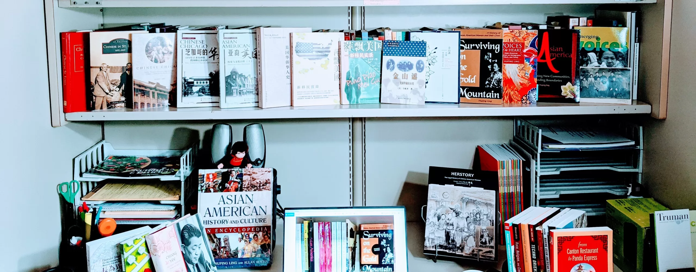

Books
Surviving on the Gold Mountain:
A History of Chinese American Women and Their Lives, Albany: State University of New York Press, 1998. Reviews. Read a chapter Buy here.

Chinese St. Louis:
From Enclave to Cultural Community. Philadelphia: Temple University Press, 2004. Reviews. Read a chapter Buy here.
Voices of the Heart:
Asian American Women on Immigration, Work, and Family. Truman State University Press, 2007. Reviews. Read a chapter Buy here.
Asian America:
Forming New Communities, Expanding Boundaries (Edited). Rutgers University Press, 2009. Reviews. Read a chapter Buy here.
Emerging Voices:
Experiences of Underrepresented Asian Americans (Edited). Rutgers University Press, 2008. Reviews. Read a chapter Buy here.
Asian American History and Culture:
An Encyclopedia (co-editor), 2 Vols. M. E. Sharpe, 2010. Reviews Buy here.
Chinese edition in the Overseas Chinese Studies Translation Series, Guangzhou: World Book Publishing Company,(2016). 令狐萍主编，亚裔美国人：历史与文化百科全书（上下两册，世界图书出版公司，2016 年）ISBN 978751920980.
A New Chinese American History:
Overseas Chinese History Series, China Overseas Chinese Publishing House, 2017. A comprehensive and up-to-date history on Chinese Americans since the 17th century.
Jinshan Yao:
A History of Chinese American Women (Expanded and Revised Edition in Classical Chinese). In the Showwei Social Sciences Series, Taipei: Showwei, 2015. Its original edition, published in the American Studies Series of the Chinese Academy of Social Sciences in 1999, won the Ford Foundation Publishing Award and has been a classic textbook internationally in American studies, Chinese overseas studies, and women and gender studies.
Chinese Americans in the Heartland:
Migration, Work, and Community. Rutgers U. Press, 2022. Read a chapter Buy here.
Asian American History:
Rutgers U. Press, August 2023. Read a chapter Buy here.
Testimonials/Reviews
Surviving on the Gold Mountain: A History of Chinese American Women and Their Lives
“Surviving on the Gold Mountain is a significant addition to our too-scent scholarly literature about Chinese American women. It is a contribution to both the history if immigration and the history of women.” –Roger Daniels, Charles Phelps and Taft Professor of History, University of Cincinnati.
“…A pioneering work…very original study of Chinese American women.” –-Wang Gungwu, Director of East Asian Institute, National University of Singapore.
“Huping Ling has written the most comprehensive history of Chinese American women to date… A work of impressive scope and scholarship, Surviving on the Gold Mountain will be of value to both students and scholars in Ethnic and Asian American history.”—Evelyn Nakano Glenn, University of California, Berkeley.
“Huping Ling’s book is a testament to the growing maturity of Asian American historical literature in the last several decades…Aside from being the first book on Chinese American women to cover an expansive time frame, this study is also pathbreaking because it details this female experience in a number of different geographical regions…Ling’s coverage of the Midwest is particularly laudable. Ling has integrated her knowledge of the larger multiethnic American immigration past with the Chinese American narrative and found similarities and differences between these multiple histories… Ling’s work is perhaps the first to offer an in-depth examination of the lives of these women students… This work… will be highly useful for classroom instruction in classes related to the U.S. immigration, Asian American Studies, and Women’s History. Scholars would also find the wealth of previously untapped information, particularly those culled from the National Archives and Chinese-language newspapers, augmented by an annotated bibliography, useful for furthering their research agendas.” —Benson Tang, Wichita State University, (American Historical Review June 1999).
Chinese St. Louis: From Enclave to Cultural Community
“Huping Ling provides a well-documented account of the development of a cultural community among Chinese Americans in St.Louis. The book offers an insightful history of the relatively unstudied Midwestern urban Chinese and provides a model for understanding other Chinese as well as non-Asian American communities,” Dr. Ronald H. Bayor, editor of The Journal of American Ethnic History.
“Huping Ling’s study of Chinese St. Louis is a breakthrough volume, the first full-scale study of the ethnic group in a Midwestern American city. Only by examining the evolution of such smaller communities can the full scope of the Chinese diaspora in America be understood,” Dr. Roger Daniels, Charles Phelps Taft Emeritus Professor of History at University of Cincinnati and a prominent pioneer scholar of Asian American studies.
“Chinese St. Louisans provides a much-needed addition to the published literature about Chinese Americans. It skillfully places the Chinese in St. Louis in the context of urban history and the Chinese American historiography. Ling’s presentation of the cultural community’ is important as it will help to further thinking about Chinese communities that are not in the form of traditional Chinatowns. It is a wonderful study, rich with insight and sophistication,” Dr. Franklin Ng, president of the Association of Asian American Studies.
Chapter of the book wins Best Article Award at 2006 Missouri Conference on History; Five Starred Reviews; featured in St. Louis Post-Dispatch, West End Word, KMOX, and KWMU.
Voices of the Heart: Asian American Women on Immigration, Work, and Family
“Voices of the Heart includes Chinese, Japanese, Filipina, Korean, and Asian Indian women as well as the newer Asian groups of Vietnamese, Laotians, Hmong, Thais, and Pakistanis. Valuable for researchers, students, and scholars in Asian American and women’s studies, this book will also appeal to those interested in the Midwest, international trade, international relations, and multiculturalism. Huping Ling has interviewed a delightful mix of distinctive Asian American women and provided us with their valuable back stories. As the heartland changes so does our country. These are new Americans we need to meet.” —Jack Tchen, New York University
“Huping Ling showcases the heretofore unknown life stories of Chinese, Japanese, Filipino, Korean, South Asian, and Vietnamese immigrant and second generation women living in the American heartland. Told in their own words, Voices of the Heart uncovers the dazzling diversity of Asian American women’s experiences as immigrants, workers, students, wives, mothers, daughters, and adoptees.”—Evelyn Glenn, University of California, Berkeley
“Unlike most books about Asian American women that focus on those who are from the coasts, Huping Ling gives voice to Asian American women in the Midwest, treating those of East Asian, Southeast Asian, and South Asian descent, as well as international students and women of mixed ethnicity. Although different in background, generation, religion, and occupation, these women share fascinating accounts of their responses to issues such as dating, romance, marriage, family, work, cross-cultural interaction, and ethnic identity. This is a worthy addition to the growing literature about Asian American women. —Dr. Franklin Ng, president of the Association of Asian American Studies.
“Ling has compiled an invaluable collection of oral history interviews that she and student assistants conducted over the past several years with 54 Asian American women of various ages and nationalities. Together, they paint a vivid picture of the impact of immigration on an individual level. The interviews are arranged by the countries of origin. In this way, Ling highlights the diversity of cultures and immigrant experiences within the Asian American community over the 20th century, with an emphasis on those who settled in the Midwest. Thus, there are separate chapters on Chinese and Japanese women as well as Filipinas, Koreans, Asian Indians, and those from Southeast Asia, including Vietnam. Each chapter starts with a brief introduction to the particular immigrant group, stressing the major influences for each. For example in writing about Filipinas, Ling emphasizes the impact of the 1965 Immigration Act and rising labor demands in the US health care industry, while in the chapter on women from Southeast Asia, she highlights the refugee experience. Ling provides an extensive bibliography and an excellent introductory overview of Asian women’s cultural and historical background. Summing Up: Highly recommended. All levels/libraries.” —K. B. Nutter, SUNY Stony Brook for Choice.
“The voices of Asian American women in Asian American history, unfortunately, all too often go unheard. ‘Voices of the Heart: Asian American Women on Immigration, Work, and Family’ offers a chance for them to be heard, speaking out in heartfelt stories about their journeys to America, their hopes, dreams, and how they have began to cope with life in America. Author Huping Ling interviewed a grand variety of Asian American women to get the most complete story possible. Highly recommended to anyone who seeks a more complete view of Americana and American history in general.” —The Midwest Book Review
“This comprehensive oral history recognizes the challenges faced by immigrant women adjusting to a new culture while working to preserve their ethnic identity.” —State Historical Society of Missouri
Asian America: Forming New Communities, Expanding Boundaries
“This volume of solid scholarship presents fresh and original research findings highlighting new phenomena in Asian American communities.” —Shehong Chen, University of Massachusetts, Lowell.
Emerging Voices: Experiences of Underrepresented Asian Americans
“This book, which begins to understand the experiences of ‘underrepresented’ minorities, is long overdue. Emerging Voices meets an important need and fills a significant gap in the field of Asian American Studies.”—Yong Chen, author of Chinese San Francisco 1850-1943: A Trans-Pacific Community.
“A unique project that broadens our understanding of diversity and promises to bring new Asian American groups into focus in a valuable way.”— George Anthony Peffer, editor of the Journal of Asian American Studies
Asian American History and Culture: An Encyclopedia
“Here is a unique reference work focusing on the history, culture, contributions, and challenges of a variety of Asian-origin groups in the U.S. … This is an excellent resource that will be used wherever there are immigrant communities or where students need a starting point for research topics. Great for high-school, college, and public libraries.” Booklist (Five starred review)
“This well-realized introduction to the culture and history of 21 ethnic groups includes the largest and most prominent–those that have their origins in China, the Philippines, India, Korea, Vietnam, and Japan–as well as smaller groups such as Bangladeshi-, Burmese-, Mongolian-, and Tibetan-Americans. … The text is clear and balanced, and occasionally profound. … This excellent, up-to-date resource will prove valuable to general readers and students.” School Library Journal
Chinese Chicago: Race, Transnational Migration, and Community since 1870.
“A unique and valuable study, sure to deepen our understanding of extra-national migratory studies in the development of modernity.”—John Kuo Wei Tchen, New York University & Museum of Chinese in America.
“Huping Ling, a prolific and leading scholar of Chinese America, gives us yet another refreshingly exciting book. An excellent community study, it offers fascinating stories about various aspects of Chinese America life in the community, ranging from food, laundry-shop work, school life, and family life in late nineteenth- and early twentieth-century Chicago. The book situates these stories in larger contexts, specially the Chinese American transnational world, providing extraordinary insights into the connection between the local and the global. It also connects the past to the present by taking an in-depth look at the post-war forces that have transformed and continue to transform Chinese Chicago.” —Yong Chen, author of Chinese San Francisco, 1850-1943: A Trans-Pacific Community.
“An insightful interpretation of Chinese community as an integral part of a multiethnic Chicago, Ling’s book is a landmark addition to the growing Chinese American transnational historiography.” —Haiming Liu, author of The Transnational History of a Chinese Family.